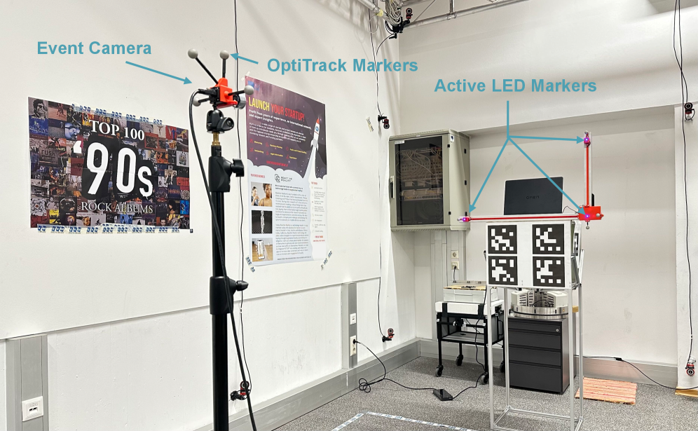

Figure 2: Overview of Omni2LoRA . A synchronized audio–visual recording is first encoded by a frozen omni LM, whose intermediate representations are consumed by a Perceiver hyperne...
Figure 2: Overview of consequence-sensitive visual token compression. During offline calibration, validation outcomes are used to estimate tier-specific error–budget curves and sel...
能否利用少量可靠事件锚点和外部传感器约束，降低跨模态对齐自由度？
对当前主题的关键意义在于：原始应用领域是事件相机主动标记定位；可迁移模块是事件锚点检测、外部约束降维和退化检测；对应时钟不同步、运动模糊与事件稀疏下的几何对齐。预期闭式求解计算与显存开销很小，但锚点检测增加前端延迟。主要风险是无主动标记时约束失效。最小实验是在 TriPro 数据合成时间偏移与运动模糊，用人体关键点/IMU 替代 LED 约束，对比无对齐、学习式对齐和约束对齐的 mA、F1、对齐误差及延迟。
方法与关键创新

Figure 1: Overview of our experimental setup . Three active LED markers are fixed on a rig with known 3D positions from an OptiTrack system. A freely moving event camera is used to...
从两个 LED 事件标记与已知倾角、高度推导闭式及线性最小二乘位姿解，并分析退化构型；真实数据以动作捕捉提供真值。
阅读时需要把方法设计与主要结果一起看：摘要报告相对先进 P2P 求解器精度更高，并与 P3P 竞争；未给出属性识别、Token 表征或显存指标。
Figure 2: Overview of Omni2LoRA . A synchronized audio–visual recording is first encoded by a frozen omni LM, whose intermediate representations are consumed by a Perceiver hyperne...
Figure 2: Overview of consequence-sensitive visual token compression. During offline calibration, validation outcomes are used to estimate tier-specific error–budget curves and sel...
![Figure 2: Overview of Omni2LoRA . A synchronized audio–visual recording is first encoded by a frozen omni LM, whose intermediate representations are consumed by a Perceiver hypernetwork to generate a full-rank bank of candidate LoRA slots ( Stage 1 ). A trainable scoring policy then sequentially selects a fixed-budget subset of slots to construct a compact adapter ( Stage 2 ), which is optimized with GRPO using a coherence-aware advantage computed from joint, visual-only, and audio-only frozen reference rollouts, encouraging preservation of cross-modal dependencies under severe compression. The resulting adapter allows the frozen backbone to answer inference queries without retaining multimodal tokens in its context window.](../assets/figures/d92d61e1035cb762.png)